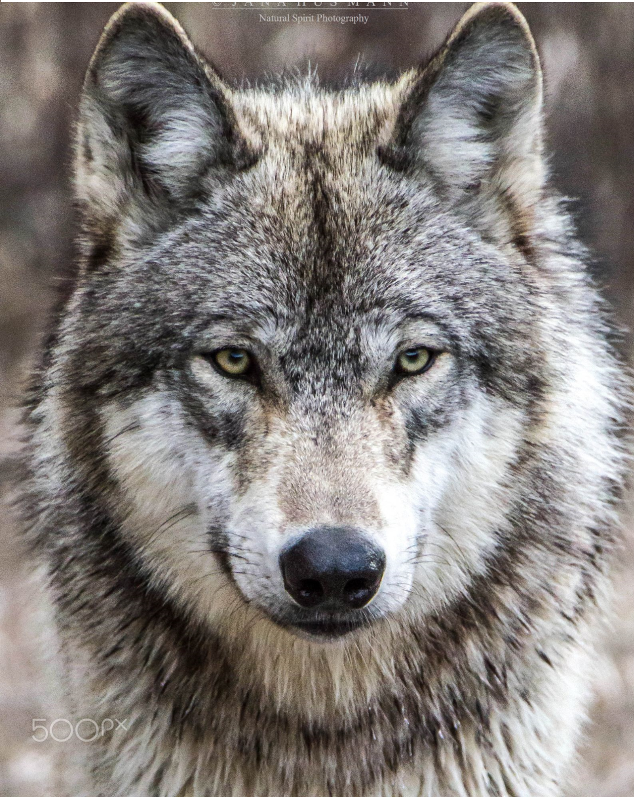
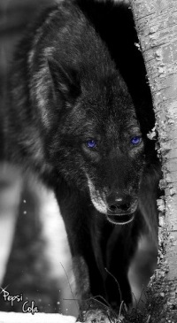

Про волчков

Волчки очень красивые, хищные животные
Обычно они живут в стаях, многие считают что волчки воют на луну, но это не так. Они воют для того что бы переговариваться с другими стаями и волками одиночками
Волки не нападают на людей без опасности для себя или для своей стаи
Так как они не всегда могут найти что поесть. то если они очень давно не ели то волки могут съесть морковь и дыню/арбуз
Волчки намного намного умнее собак
Если на стаю волчков кто то напал то волки будут защищать друг друга до последнего
Раньше волчков боялись. И в мифах их начали наделять волшебной силой. Так и появились сказки в которых были оборотни волки которые умели превращаться в людей
